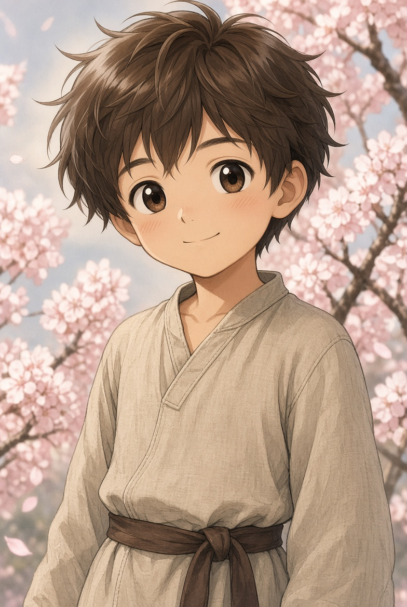
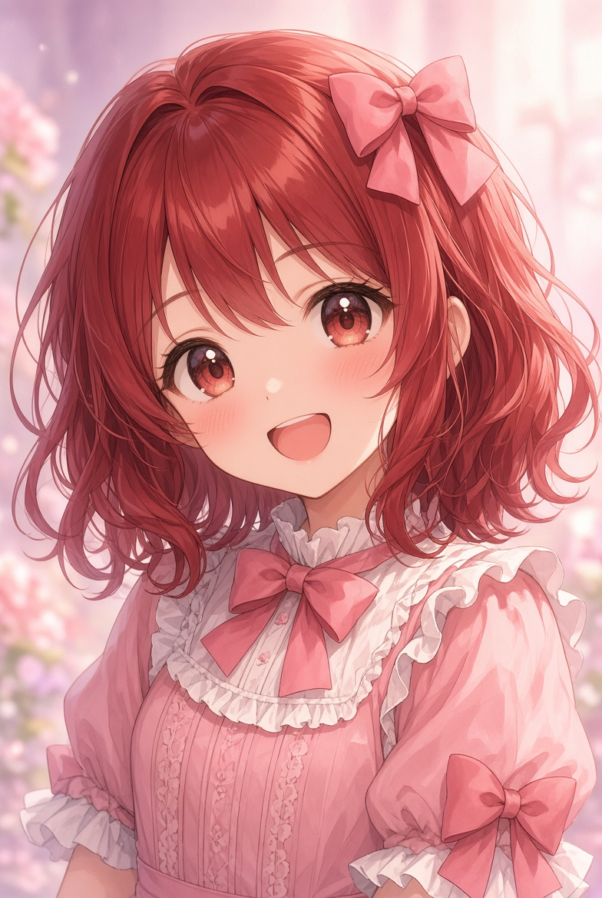
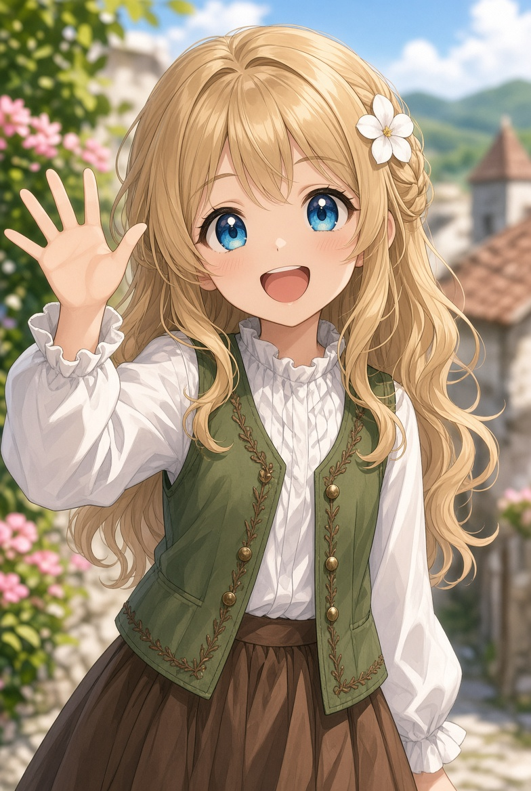
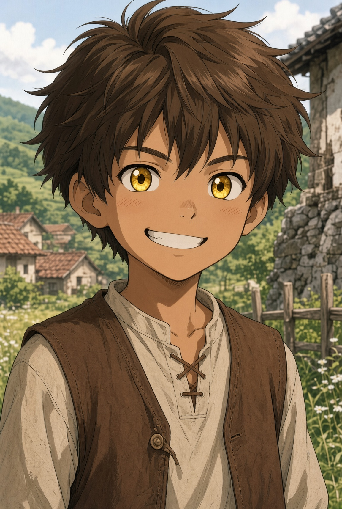
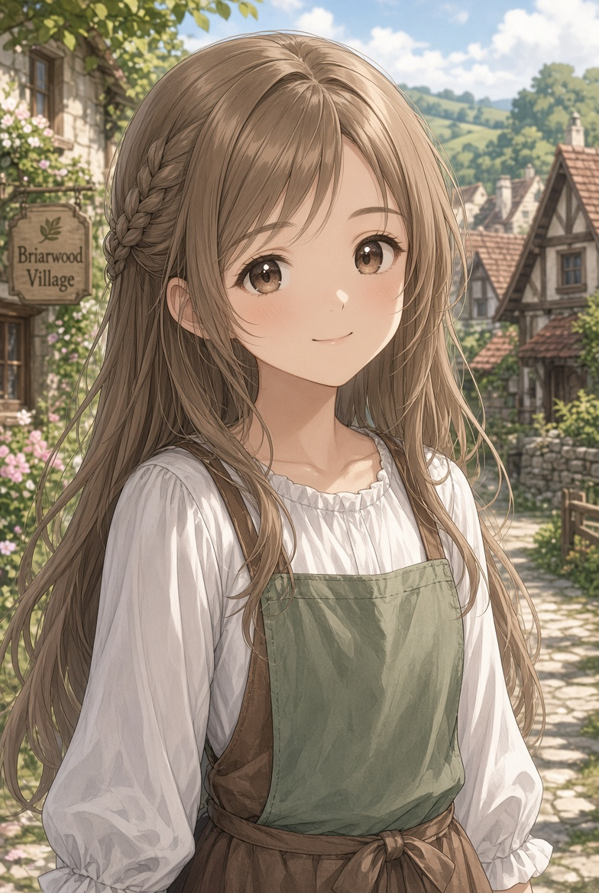
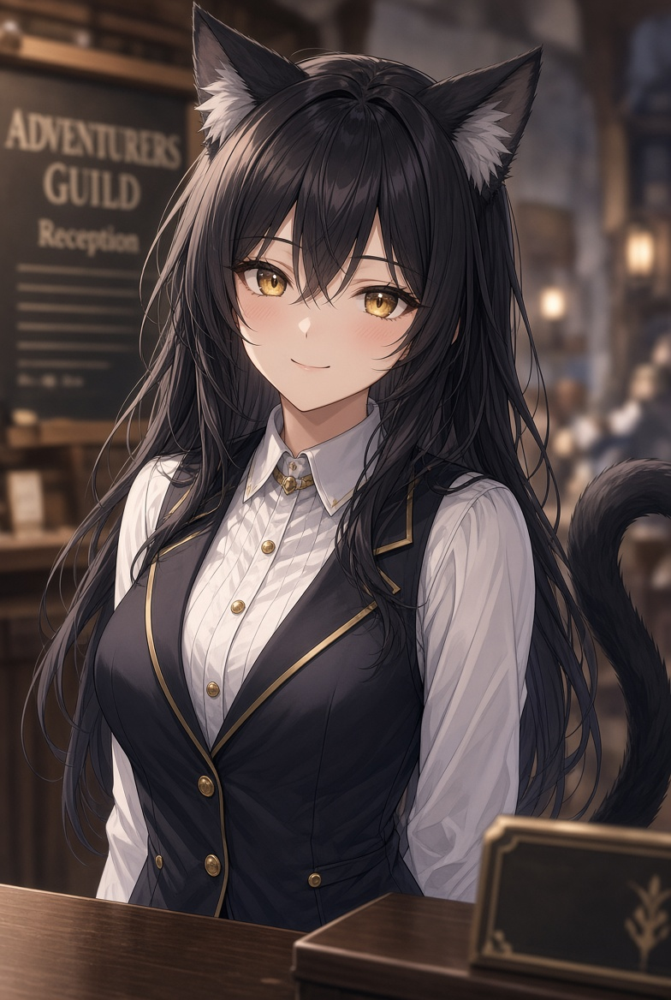

キャラクター 一覧 のんびり、ほのぼの、ゆるりと
主要キャラクター

マハム・ハインリヒ
5歳の鑑定の儀で「スローライフ」というハズレスキルを引き、両親を落胆させた貴族三男。6歳で妹ミリアとともに辺境カーマイン村へ領主代行として左遷される。
村に入った瞬間スキルが活性化し、鑑定初級・アイテムボックス小・植物図鑑知識初級・魔物図鑑知識初級などの便利な派生スキルを得る。戦闘よりも庭いじりや観察が得意で、のんびり屋。
前世の記憶を持ちながらも、村の人々と関わり、庭の手入れやスライム狩り、村の施設視察を通じて少しずつ「何もしない」ことの奥深さを知っていく。転生者らしい冷静さと、子供らしい好奇心を併せ持つ主人公。

ミリア・ハインリヒ
マハムの一つ下の妹。鑑定の儀で「裁縫」を引き、武勲第一主義の侯爵家では不満を持たれたが、本人はすぐに立ち直る優しい性格。
魔法陣の刺繍ができる実用品としての裁縫スキルを持ち、護符作りが上手。村に来てからはシータと一緒に針仕事をしたり、マハムを心配したりと、兄想いの可愛い妹として活躍する。
少し心配性だが、好奇心旺盛で村の生活にもすぐ慣れる。絵日記を書くのが得意で、兄上への手紙にも絵日記を添える。
シータ・エルドラン
ハインリヒ侯爵家のメイドで、マハムとミリアの世話係。下級貴族の親戚筋で、社交界の噂を嫌ってメイドの道を選んだ黒髪黒目の低身長巨乳美少女。
氷魔法（水魔法の上位）を持ち、生活魔法も得意。クリーン魔法で家を掃除したり、氷でアイスティーやアイスクリームを作ったりと、村生活を支える頼れるお姉さん。
戦闘能力も一定以上あり、護衛としての役割も期待されていた。マハムたちにとっては親代わりのような存在で、優しくしっかりした性格。

ターリャ
カーマイン村の村長ドーサンとカイラの娘。金髪碧眼の元気いっぱいな女の子で、毎朝領主館の丘を駆け上がって「あーそーぼー」とマハムたちを呼びに来る。
かけっこが得意で足が速く、村の案内役としてマハムたちを連れ回す。食いしん坊でお祭りや宴会が大好き。ミリアとはすぐに仲良くなる。
無邪気で行動力があり、時に大人を振り回すが、村の日常に欠かせない存在。マハムにとっては最初の村の友達。
ハインリヒ侯爵家
カイン・ハインリヒ
家督を継ぐ予定の優秀な長男。筆まめで、定期的にマハムたちへ手紙を送る。王都でのパーティーや婚約探しに苦労している。
エイド・ハインリヒ
火魔法スキル持ちのやんちゃな次男。マハムたちにはあまり興味がなく、手に余る存在として描かれる。
ハインリヒ侯爵
武勲第一主義の侯爵。ハズレスキルのマハムとミリアを左遷するが、一年後には寂しさを感じて帰還を促す不器用な父親。
エメダ・ハインリヒ
左遷には反対しつつも、侯爵家の事情に従う。子供たちを気遣う優しい性格。
カーマイン村の主な住人

トール
カーマイン村のガキ大将。いばりんぼで噂好き、少し生意気な態度を取るが根は悪くない。マハムたちが村に来てからはよく絡んできて、一緒に遊びや探索に加わる。
彼女のソラエナとは幼馴染で、彼女の前では少し素直になる。騎士になりたいと一時的に木剣で素振りをしたり、噂を仕入れてきてはマハムたちを巻き込むなど、行動力はあるが三日坊主気味。
村の子供たちの中心的存在で、マークやロイドといった兄弟を従えている。マハムにとっては最初の男友達的な存在。

ソラエナ
トールの幼馴染で彼女ポジ。頭が良く、冷静で優しい性格。トールが暴走しそうなときにさりげなく止める役割を担うことが多い。
実は妖精を見たことがあるなど、ロマンチックな一面も持つ。マハムやミリアともすぐに打ち解け、村の子供たちの中では比較的落ち着いた存在。
トールを支えるしっかり者で、彼女の存在があるからこそトールのガキ大将ぶりも成り立っている。

ラーミア
黒髪金目の猫獣人で、カーマイン村の冒険者ギルド受付嬢。語尾が「にょ」という特徴的な口調。口癖が抜けずに左遷されてきた経緯を持つ。
愛嬌があり、尻尾や耳で感情がよく出る。ギルドの仕事はあまり忙しくないため、マハムたちがスライム魔核を売りに来るたびに会話を楽しむ。お酒に弱く、祭りではよく酔っ払う。
とある紳士に好意を抱いているなど、恋愛面でも少し恥ずかしがり屋。村のムードメーカー的存在で、マハムたちとも気軽に話せるお姉さん。
ドーサン村長
ターリャの父親。温かく世話焼きで、村のまとめ役。昔はガキ大将だったという過去を持つ。シイタケと紅茶栽培をしている。
カイラ
ターリャの母親。おっとりしているが夫の尻を叩くこともある。シータにダイエット相談をするなど、村の主婦代表。
リリー・カサンドラ
村の最長老兼相談役。最上級ポーションを製造して村の外貨を稼ぐ薬師。マハムの錬金術の師匠。くすんだ金髪のハイエルフ。
バハト・ローリン準男爵
普段何をしているか不明なギルド長。奥で書類仕事をしているらしいが、実は意外な趣味の副業も。
ヘルマート・フィランド男爵
村に来る商人貴族。アイテムボックス持ちで、リリーのポーションを王都まで運ぶ重要任務を担当。丸顔で愛嬌のある人。
アンドリュー神父
村の教会の神父。高齢で背が低く、ドワーフ族かもしれない。熱心な信者で、村の行事にも積極的に関わる。
雑貨屋の店主
村の生命線である何でも屋の店主。元鍛冶屋で金物に強い。蜂蜜飴や野沢菜饅頭なども扱う。
喫茶店のメイドさん
村の喫茶店で働く素朴な村娘のメイドさん。コーヒーやホットケーキを提供し、マハムたちを迎える。
漬物屋のおじさん
村唯一の漬物専門店の店主。がっちり体型で高身長。キャベツや野沢菜の漬物を作り、町へも輸出している。